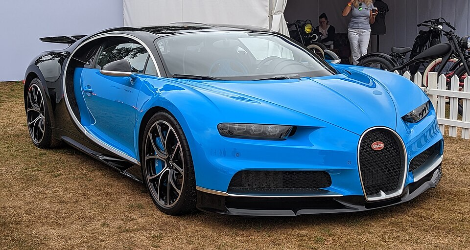
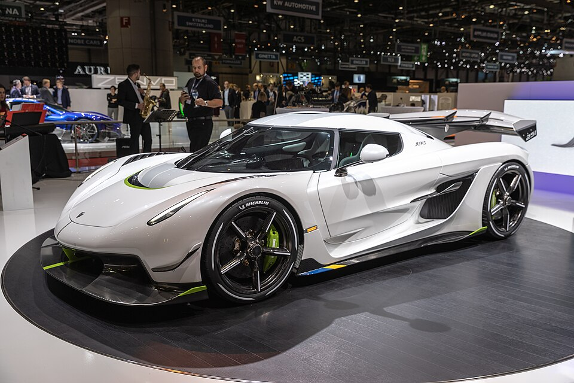

Hypercars
This page is about hypercars and some of the fastest cars in the world.
Top Hypercars
Bugatti Chiron
Koenigsegg Jesko
McLaren P1
Ferrari LaFerrari
Lamborghini Sián
Aston Martin Valkyrie


About
I made this page because I enjoy hypercars and wanted to showcase some of my favourites.
Help
Use the search bar above to look up more cars.